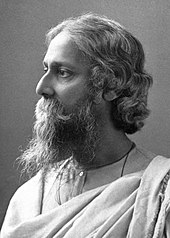

Next
History

The song was written ib 1905 during the first partition of Bengal,
when the ruling British Empire had an undivided province of Bengal Presidency split into two parts; the decision was announced on 20
July by the then-Viceroy of India Lord Curzon, taking effect on 16 October. This divide of Bengal, being along communal lines–East Bengal and Assam having a majority of Muslims and West Bengal having a majority of Hindus–is claimed to have undermined India's tional movement against the UK's imperialism and to have been politically motivated. Along with a host of others, songs such as this were meant to rekindle the unified spirit of Bengal, to raise public consciousness against the communal political divide. The lyrics first appeared in the September issues of Bongodorshon and Baul simultaneously, in 1905. The song along with the musical notation (referred to as swaralipi in Bengali), first appeared in the periodical musical journal Shongeet Biggnan Probeshika in the same month and year. Indira Devi, Tagore's niece, Satyendranath Tagore's daughter, jotted down the musical
Heading 1
Heading 2
Heading 3
Heading 4
Heading 5
Heading 6